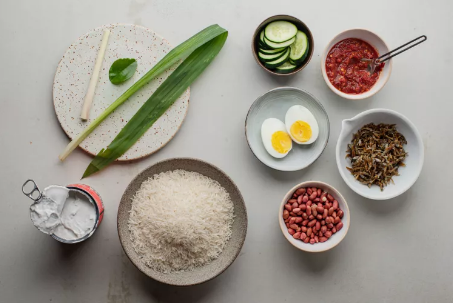
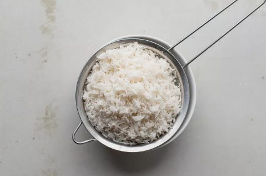
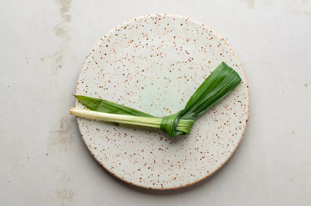
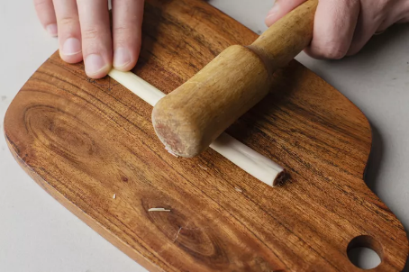
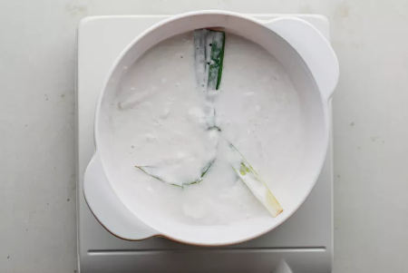
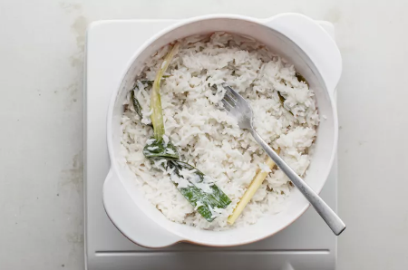
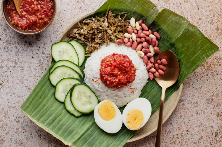

Serving a good plate of Nasi Lemak

Picture credits to RASAMALAYSIA
Recipe credits to SMR
INGREDIENT LIST
- 2 cups basmati rice, or other long-grain rice
- 1 pandan leaf
- 1 stalk lemongrass, white portion only
- 1/2 leaf makrut lime leaf, optional
- 1 (13.5-ounce can) coconut milk
- Sambal, hard-boiled egg halves, sliced cucumber, crispy fried anchovies, peanuts, for garnish
STEPS TO MAKE IT
- Gather the ingredients

- Rinse the rice and drain

- Tie the pandan leaf into a knot.

- Lightly pound the lemongrass stalk

- Drop the pandan leaf, lemongrass, and makrut lime leaf, if using, into the pot (alternatively you can use a rice cooker).
Pour in the rice followed by the coconut milk, bring to a boil, cover with a lid and cook for 20 minutes.

- Halfway through cooking, remove the lid and stir the rice briefly with a fork. Continue cooking until done.

- To serve, place a mound of coconut rice at the center of a plate. Top with a heaping tablespoon of sambal. Arrange the garnishes around the rice and serve.

Back to main page